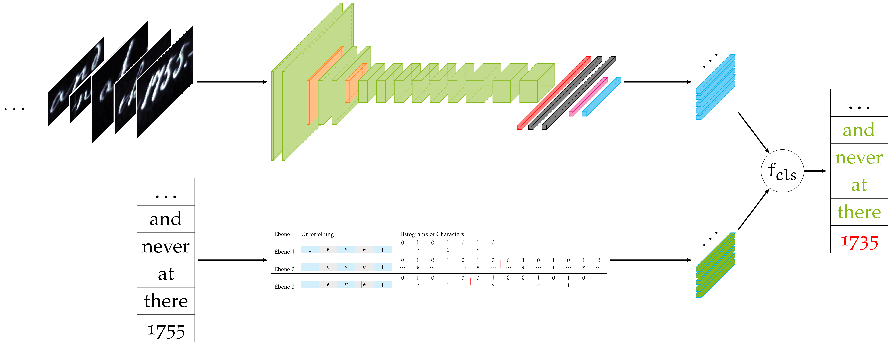

src package¶
Subpackages¶
Module contents¶
The residing code was created and used for a lexicon based Word-Recognition model in my bachelor thesis. The lexicon consists of all words for a given dataset and respective PHOC thereof. PHOC of the images are estimated using the PHOCNet. Alternatively, some of the PHOCNets neural codes can be extracted, if the estimator utilizes CCA. The estimator then estimates a transcription for the image, using the attribute vector representations of the words and the image.
In essence: Images and words are transformed into a shared subspace using the PHOCNet (or neural codes thereof and CCA) and PHOC encodings. The estimator then performs a nearest neighbour search given some specified process of measure (e.g. cosine/ euclidean distance or PRM-scores).
The following pipeline visualizes said model.
The PHOCNet is specified in the nn package. Every dataset already provides a PHOC for evey image, the lexicon can be constructed by extracting words and PHOC from the dataset and there is no need for a lexicon class. Estimators are specified in the estimation package.
A brief overview on this projects subpackages:
The nn package provides the PHOCNet
The estimation package features all estimators, that deal with the final word estimation based on a lexicon of PHOC and estimated PHOC/ neural codes of the PHOCNet
The io package deals with the dataloaders for the George Washington, IAM, RIMES and HW-Synth data sets.
The training and experiments packages provide scripts for different variations of training and inference.
The util package provides methods for PHOC, as well as measures of success regarding word recognition and word-spotting
The parser package provides args-parser for the training and inference scripts
The pyrcca package is a dependency, that is currently not available via pip, hence it is embedded here